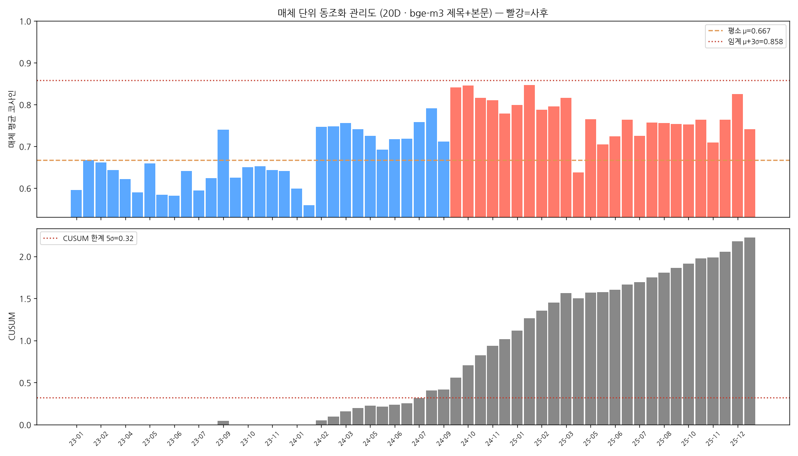

고려아연 매체 간 보도 동조화의 의미 임베딩 다축 분석
— 동조화는 매체 단위에서 드러난다
ABSTRACT
본 연구는 하나의 사건이 다수 매체의 보도를 의미적으로 수렴시키는 현상(보도 동조화)을 정량 측정한다. 고려아연 경영권 분쟁 관련 기사 50,188건의 본문을 의미 임베딩으로 변환하고, 기사쌍의 코사인 유사도를 측정하였다. 핵심 발견은 동조화의 가시성이 집계 단위에 따라 결정적으로 달라진다는 점이다. 개별 기사 단위에서는 사건이 보도를 여러 각도로 분화시켜 동조화가 묻히지만, 각 매체의 보도를 centroid로 묶는 매체 단위에서는 동조화가 선명히 드러난다. 공개매수(2024-09-13) 이후 매체 간 평균 유사도는 0.67에서 0.77로, 매우 유사한(≥0.9) 매체쌍 비중은 6.6%에서 19.4%로 상승하였다(모두 p<10⁻⁷). 이 결과는 네 가지 임베딩 방식에서 일관되게 재현되어 강건하다. 본 연구는 매체 간 보도 동조화가 매체 단위 집계에서 측정되어야 함을 실증한다.
1. 서론
한국의 뉴스 이용 환경은 세계적으로 유례를 찾기 어려운 포털 집중 구조를 보이며, 이는 매체 간 보도 동조화를 논의할 자연스러운 출발점이 된다. 한국언론진흥재단(2023)에 따르면 디지털 뉴스 이용자의 약 63%가 포털 검색으로 뉴스를 접하는 반면, 언론사 사이트를 직접 방문하는 비율은 6%에 불과하다. 더욱이 네이버 한 곳의 포털뉴스 점유율이 92.1%에 달해, 사실상 단일 플랫폼이 한국어 뉴스 유통의 전 과정을 매개하는 구조가 굳어져 있다.
이 구조에서 네이버에 제휴된 수백 개 매체는 동일한 이용자 풀을 두고 경쟁하므로, 매체 간 보도의 유사성은 한국 뉴스 생태계의 구조적 특성을 규정하는 핵심 변수가 된다. 모든 기사가 같은 검색 화면에 동일한 형식으로 노출되어 공간적 조건이 단일하게 통제되고, 매체명·발행 시각·URL 등 메타데이터도 표준화되어 대규모 정량 분석이 용이하다. 이러한 조건은 하나의 사건을 두고 매체 간 보도가 얼마나 닮아 가는지를 관찰하기에 유리한 자연 실험적 환경을 제공한다.
매체 간 보도 동조화의 측정은 학술적 관심을 넘어 사회적 시의성을 갖는데, 2026년 2월 신설된 네이버 「뉴스 제휴 심사 및 운영 평가 규정」이 그 직접적 배경이다. 이 규정은 자기 복제와 중복 부당 전송 등을 정량 척도로 도입하였고, 특히 중복 부당 전송은 두 기사의 문장 유사도가 90% 이상인 비율로 측정된다. 그러나 이러한 척도가 실제 포털뉴스 환경에서 어떤 분포를 보이는지에 대한 학술적 기준선은 아직 충분히 정립되지 않았다.
본 연구는 하나의 사건이 만드는 매체 간 보도 동조화를 의미 임베딩으로 측정하며, 분석 대상은 단기간 다수 매체의 집중 보도가 관찰된 고려아연 경영권 분쟁이다. 핵심 질문은 동조화를 어느 집계 단위에서 측정해야 드러나는가이며, 본 연구는 측정 단위가 기사·기자매체·매체로 거칠어질수록 동조화의 가시성이 달라진다는 점을 규명한다. 그 결과 개별 기사 단위에서는 묻혀 있던 동조화가 매체 단위에서 통계적으로 분명하게 드러남을 보인다.
2. 선행연구와 한계
본 연구는 ① 의미 임베딩 기반 뉴스 분석, ② 한국어 뉴스 텍스트 마이닝, ③ 포털뉴스 어뷰징·중복 보도 연구의 세 흐름이 교차하는 지점에 위치한다.
2.1 의미 임베딩 기반 뉴스 분석
뉴스 텍스트의 의미 유사성 측정은 사전학습 언어모델의 등장으로 새로운 단계에 진입하였는데, Devlin et al.(2019)의 BERT는 문맥 의존적 단어 표현으로 자연어처리 전반의 표준이 되었다. 이어 Reimers와 Gurevych(2019)는 Sentence-BERT로 문장 수준 유사도 측정의 효율적 표준을 마련하였고, Gao et al.(2021)은 대조 학습 기반 SimCSE로 문장 임베딩의 표현력을 한층 끌어올렸다. 특히 Chen et al.(2024)은 팬데믹 초기 6천만 건의 뉴스를 임베딩하여 국가 간 보도 동기성을 대규모로 측정함으로써, 본 연구와 직접 맞닿는 선례를 제시하였다.
2.2 한국어 뉴스 텍스트 마이닝과 매체 비교
한국어 뉴스 텍스트 마이닝은 토픽 모델링과 네트워크 분석을 중심으로 발전해 왔으며, 진설아 외(2013)는 동시출현단어분석으로 트위터의 토픽 변화를 시계열로 추적하였다. 정안용 외(2022)는 6,131건의 헤드라인으로 스마트도시 보도의 변화를 추적하였고, 최정균 외(2017)는 세월호 보도를 텍스트 마이닝으로 분석해 언론사 성향별 차이를 드러내었다. 그러나 이들 연구는 대체로 키워드·토픽 수준에 머물거나 소수 일간지에 한정되어, 매체 단위의 대규모 의미 비교에는 이르지 못하였다.
최근 한국어 뉴스 연구는 키워드를 넘어 의미 임베딩으로 빠르게 전환되고 있는데, 박지원 외(2026)는 S-BERT와 LLM 임베딩의 토픽 모델링 성능을 체계적으로 비교하였다. 이인규·강현철(2025)은 한국어 뉴스의 AI 생성 여부 판별에 임베딩을 적용하였고, 김도경(2026)은 문장 임베딩과 LLM 추론을 결합해 보도 프레임을 측정하였다. 이러한 흐름은 한국어 뉴스 분석의 중심이 어휘 빈도에서 의미 벡터로 이동하고 있음을 분명히 보여준다.
2.3 포털뉴스 어뷰징·중복 보도 연구
매체 간 보도 동질화는 영문 전통에서 매체 간 의제 설정으로 폭넓게 다루어져 왔다(McCombs & Shaw, 1972; Vargo et al., 2018). 한국에서는 이 동질화가 포털뉴스 어뷰징 연구로 발전하여, 조영신 외(2015)는 매체 지위가 어뷰징 빈도에 미치는 영향을 실증하였다. 함민정·이상우(2018)는 실시간 검색어 기반 어뷰징을 사례로 분석하였고, 송석현(2019)은 미디어 플랫폼 어뷰징의 법적 규제 문제를 검토함으로써 제도적 논의를 더하였다.
매체 간 동질화를 의미 유사도로 직접 측정하려는 시도도 최근 등장하였는데, 이종혁(2021)은 Doc2Vec 문서 유사도로 매체 간 뉴스 동질화 현상을 탐색하였다. 안정윤·이종혁(2015)은 매체 간 이슈 속성 네트워크의 유사성을 분석하였고, 박대민 외(2018)는 유사도와 공동출현에 기초한 뉴스문장 연결망 알고리즘을 제안하였으며, 영문에서도 Wang과 Shi(2022, 2023)가 매체 간 의제 설정을 전산적으로 분석하였다. 그러나 이들은 Doc2Vec·어휘·네트워크 수준에 머물러, 다국어 대형 임베딩을 매체 centroid 단위로 적용하고 집계 단위를 체계적으로 비교한 본 연구와 분명히 구별된다.
3. 연구문제와 가설
선행연구의 공백 위에서 본 연구는 다섯 가지 검정 가능한 가설을 설정하며, 그 핵심 질문은 동조화를 어느 집계 단위에서 측정해야 비로소 드러나는가이다. 종래의 서술적 관찰을 명시적 귀무가설과 단측 대립가설로 조작화해 통계 검정으로 전환하는 것이 본 연구의 방법적 차별점이다. 아울러 동일한 분석 틀을 네 가지 임베딩 방식에 똑같이 적용하여, 결론이 특정 모델이나 입력에 의존하지 않는다는 강건성까지 함께 확인한다.
H1 (규모). 사건 이후 일별 기사 수와 보도 매체 수가 유의하게 증가한다.
H2 (매체 동조화). 사건 이후 매체 간 보도 유사도(평균 및 ≥0.9 비중)가 유의하게 상승한다.
H3 (집계 단위). 같은 동조화라도 기사·기자매체·매체 중 무엇으로 묶어 비교하느냐에 따라 드러나는 정도가 달라지며, 한 매체의 기사를 묶어 매체끼리 비교할 때 가장 뚜렷하게 나타난다.
H4 (강건성). 동조화 결론은 네 가지 임베딩 방식에 무관하게 성립한다.
H5 (발행 타이밍). 사건 당일 일부 매체·기자는 기사를 단시간에 몰아 발행한다(rapid-fire).
4. 연구방법
4.1 사건과 데이터
분석 대상 사건은 2024년 가을 한국 자본시장을 뒤흔든 고려아연 경영권 분쟁이다. 2024년 9월 13일 MBK파트너스와 영풍 연합이 고려아연 지분을 겨냥한 공개매수를 전격 발표하면서 적대적 인수합병이 시작되었다. 이후 양측의 자사주 공개매수 경쟁, 2025년 1월의 임시주주총회, 3월의 정기주주총회, 4월의 검찰 압수수색으로 분쟁은 여러 국면을 거치며 이어졌다. 이처럼 단기간에 수백 개 매체가 같은 사안을 집중 보도한 점이 매체 간 동조화를 관찰하기에 적합한 조건을 만든다.
데이터는 네이버 뉴스에서 검색어 '고려아연'으로 기사를 수집하고 본문을 추출해 데이터베이스에 적재하는 방식으로 구축하였다. 동조화는 사건 당일 여러 매체가 한꺼번에 기사를 쏟아내는 현상이므로, 바로 그 피크일을 빠짐없이 수집하는 일이 모든 분석의 토대가 된다. 그런데 네이버 뉴스는 같은 검색을 오래 이어가면 응답을 막아 하루치를 열 건 안팎만 돌려주는 스로틀이 자주 걸려, 정작 기사가 폭증하는 사건일이 크게 과소 집계되기 쉽다. 이 문제를 해소하기 위해 본 연구는 무한스크롤의 커서 기반 more-API로 하루치를 전수 수집하는 새 크롤러를 제작하였고, 스로틀이 감지되면 세션 갱신과 점증 백오프로 자동 복구하도록 설계하였다. 그 결과 한 번에 열 건에 머물던 피크일이 수백 건 규모로 온전히 복원되어, 사건일의 보도 밀집을 누락 없이 담아낼 수 있었다. 수집 직후에는 피크일의 기사 수가 비정상적으로 적지 않은지 점검하여 데이터의 완전성을 확인하였으며, 이렇게 확보한 전수 자료가 뒤따르는 모든 지표와 검정의 신뢰성을 떠받친다.
최종 분석에는 사건과 직접 관련된 기사 50,188건의 본문을 사용하며, 수집 기간은 2023년 1월부터 2026년 1월까지로 사건 전후를 넉넉히 포괄한다. 사건 원점은 공개매수 발표일인 2024년 9월 13일로 두어, 이 시점을 기준으로 사전과 사후를 나눈다. 각 기사는 발행 시각과 매체명을 가지므로 시간 창에 따른 집계와 매체 단위 집계가 모두 가능하다.
4.2 의미 임베딩과 L2 정규화
의미 임베딩은 텍스트를 그 의미를 담은 숫자 벡터로 바꾸는 기술로, 비슷한 의미의 글은 비슷한 방향의 벡터로 변환된다. 따라서 두 벡터가 가리키는 방향이 얼마나 일치하는지를 보면 두 글의 의미 유사도를 잴 수 있으며, 이때 방향 일치도를 재는 표준 척도가 바로 코사인 유사도다. 본 연구는 모든 유사도 계산에 앞서 임베딩을 L2 정규화하는데, 그 의미와 효용은 아래에서 차례로 설명한다.
L2 정규화는 벡터의 길이를 1로 맞춰 크기는 버리고 방향만 남기는 절차로, 여기서 벡터의 L2 길이(노름)는 각 성분을 제곱해 더한 뒤 제곱근을 취한 값이다. 정규화는 이 길이로 벡터를 나누어 길이가 정확히 1인 단위벡터를 만드는데, 예컨대 벡터 (3, 4)의 길이는 √(9+16)=5이다. 이를 길이로 나누면 (0.6, 0.8)이 되고 그 길이는 √(0.36+0.64)=1이 되어, 방향은 그대로 둔 채 크기만 1로 통일됨을 알 수 있다.
L2 정규화를 하는 가장 큰 이유는 코사인 유사도 계산이 크게 간단해지기 때문인데, 코사인 유사도는 원래 두 벡터의 내적을 각 벡터의 길이 곱으로 나눈 값이다. 그런데 두 벡터를 미리 정규화하면 길이가 모두 1이 되어 분모가 1이 되고, 따라서 코사인 유사도가 곧 두 단위벡터의 내적과 정확히 같아진다. 결과적으로 나눗셈이 사라지고 곱셈과 덧셈만으로 유사도가 계산되어, 수만 건 규모의 연산도 행렬 곱 한 번으로 끝낼 수 있다.
기하학적으로 L2 정규화는 모든 벡터를 반지름 1인 구의 표면 위 점으로 옮기는 작업이며, 그 구 위에서 두 점이 같은 방향을 가리킬수록 코사인 값이 1에 가까워진다. 이렇게 하면 글의 길이나 강도 같은 크기 차이는 무시되고 의미의 방향만 비교되므로, 긴 기사든 짧은 기사든 동일한 기준으로 공정하게 비교된다. 본 연구가 모든 임베딩을 정규화한 것은 바로 이러한 해석적 명료성과 연산 효율을 동시에 얻기 위해서다.
매체 단위 분석에서는 정규화를 두 단계로 적용하는데, 먼저 각 기사의 임베딩을 단위벡터로 정규화한 뒤 한 매체에 속한 기사 벡터들을 평균하여 그 매체의 centroid를 만든다. 이렇게 얻은 평균 벡터는 길이가 1보다 작아지므로 다시 한 번 L2 정규화하여 길이를 1로 맞춘다. 그래야 매체 간 centroid 비교 역시 크기에 휘둘리지 않고 오직 보도의 의미 방향만으로 이루어진다.
4.3 네 가지 임베딩 방식
한국어 뉴스 임베딩에는 여러 모델 선택지가 있으며 용도에 따라 적합한 모델이 달라지는데, 짧은 헤드라인이나 문장에는 ko-sroberta-multitask·KoSimCSE·KR-SBERT 같은 한국어 SBERT 계열이 무난하다. 반면 긴 본문이나 검색·RAG에는 다국어·장문 모델이 강점을 보이며, 특히 bge-m3는 다국어와 8,192토큰 장문을 지원해 긴 뉴스 본문을 통째로 임베딩할 때 사실상 표준급으로 채택된다. 그 밖에 multilingual-e5-large나 고려대 KURE-v1도 한국어 검색 과제에서 상위 성능을 보고하여, 본 연구의 모델 선택에 참고가 된다.
본 연구는 이 가운데 bge-m3와 text-embedding-3-large 두 모델을 채택하였는데, bge-m3는 긴 본문을 손실 없이 담을 수 있고 자체 GPU 서버에 올려 비용 없이 대량 처리할 수 있다. text-embedding-3-large는 인프라 부담 없이 안정적 품질을 제공하는 API 기준선으로 함께 두었으며, 두 모델에 각각 제목+본문과 명사 TF-IDF 묶음이라는 두 입력을 적용해 모두 네 가지 방식을 구성한다. 명사 묶음 방식은 형태소 분석으로 명사를 추출한 뒤 TF-IDF가 0.05 이상인 명사만 남겨 임베딩하며, 네 방식이 모두 같은 결론을 주는지로 결과의 강건성을 확인한다.
4.4 집계 단위와 centroid
본 연구의 핵심 설계는 동일한 유사도를 세 가지 집계 단위에서 나란히 측정하는 데 있다. 첫째 기사 단위는 개별 기사 벡터 쌍의 코사인을 직접 보고, 둘째 기자-매체 단위는 같은 매체의 같은 기자가 쓴 기사를 하나의 centroid로 묶어 비교한다. 셋째 매체 단위는 한 매체의 모든 기사를 centroid로 묶어 매체 간 코사인을 보며, 모든 단위에서 그에 속한 기사를 평균·정규화한 centroid 사이의 유사도를 측정한다.
4.5 시간 창과 지표
시간은 사건일에 정렬하여 1·5·10·20일의 네 가지 창으로 끊고, 한 창 안의 기사와 단위를 모아 그 창의 유사도 분포를 구한다. 창을 넓힐수록 하루치 표본 부족에서 오는 잡음이 줄어 동조화의 추세가 한층 뚜렷해진다. 각 창과 단위에서 네 가지 지표, 곧 단위 수와 평균 유사도, 그리고 임계(0.90·0.95·0.99) 이상 쌍의 절대 빈도와 상대 빈도를 함께 산출한다.
4.6 통계 검정
매체 단위 동조화 시계열에는 네 가지 통계 검정을 적용한다. 먼저 사건 전후의 매체 간 유사도를 Mann–Whitney 검정으로 비교하고, 보도 매체 수의 사후 급증은 과대산포를 고려한 음이항 회귀로 검정한다. 이어 CUSUM으로 동조화 상승이 시작된 시점을 검출하고, 평소 평균에 3σ를 더한 관리도 상한으로 비정상적으로 응집한 구간을 식별한다.
4.7 발행 타이밍 버스트
거시적 동조화의 미시적 메커니즘을 보기 위해 사건 당일의 발행 타이밍을 분석하며, 분 단위 발행 시각과 기자명을 가진 데이터를 사용한다. 매체와 기자별로 60분 내 최대 발행 수(peak60)를 산출한 뒤, 이를 무작위 발행 영모형과 비교해 우연으로 설명되지 않는 의도적 몰아쓰기(rapid-fire)를 식별한다. 같은 무작위 영모형 논리가 일별 동조화와 분별 발행 타이밍에 일관되게 적용되어, 거시와 미시 분석을 하나의 틀로 잇는다.
5. 고려아연 분석
서술 지표를 기사 수 → 평균 유사도 → 임계 이상 절대빈도 → 임계 이상 상대빈도 순으로 살피고, 각 지표를 4임베딩 × 1·5·10·20일 템플릿으로 제시한 뒤 그 위에서 통계 검정을 수행한다. 모든 그림은 행이 4임베딩, 열이 시간 창이며, 칸마다 세 단위(기사·기자매체·매체)를 색이 다른 세 선으로 그린다.
5.1 기사·단위 수
분석은 사건이 만든 보도의 규모를 보는 데서 출발하는데, 기사 수와 보도에 가담한 매체 수는 공개매수일 직후 모든 시간 창에서 가파르게 치솟는다. 1일 창에서는 변동이 크지만 사건일의 폭증이 한 점으로 또렷이 드러나고, 창을 5·10·20일로 넓히면 사후 구간 전반이 평소보다 높은 수준을 유지함이 보인다. 곧 사건은 더 많은 기사를 더 많은 매체가 쏟아내게 만드는 규모적 변화를 먼저 일으킨다.

5.2 평균 코사인유사도
다음으로 기사들이 의미적으로 얼마나 닮았는지를 평균 코사인유사도로 본다. 세 단위 가운데 매체 단위(빨간 선)가 일관되게 가장 높고 사건 후 한 단계 더 올라서는 반면, 기사 단위(파란 선)는 평소에도 낮고 사건 후 변화도 작아 동조화가 잘 드러나지 않는다. 시간 창을 넓힐수록 매체 단위의 사후 상승이 잡음에서 분리되어 뚜렷해지는데, 이는 매체별 보도가 사건을 계기로 같은 방향으로 수렴함을 뜻한다.

5.3 임계 이상 절대빈도 (≥0.8·0.9)
유사 보도가 실제로 몇 건이나 쏟아졌는지는 임계 이상 쌍의 절대 개수로 본다. ≥0.8과 ≥0.9 모두 사건 후 절대 수가 가파르게 늘어나며, 기사 단위에서는 near-duplicate 쌍이 사건 후 수천 건대로 불어난다. 매체 단위에서도 매우 닮은 매체쌍이 0에서 수십 건대로 계단처럼 증가하여, 비중과는 무관하게 동조 보도의 양 자체가 폭증함을 보여준다.


5.4 임계 이상 상대빈도 (≥0.8·0.9)
이번에는 전체 쌍 가운데 유사 보도가 차지하는 비중을 본다. 매체 단위에서 ≥0.8·0.9 비중이 사건 후 크게 뛰어 동조화가 비율로도 분명히 드러나는 반면, 기사 단위에서는 비중이 오히려 줄어드는데 이는 사건이 보도를 여러 갈래로 분화시켜 분모를 키웠기 때문이다. 표 1은 20일 창 기준으로 단위가 거칠어질수록 동조화가 강해지는 사다리를 요약하며, 결국 동조화는 매체 단위에서 가장 선명하게 측정됨을 보여준다.


| 단위 | 평균 유사도 | ≥0.9 비중 | 판정 |
|---|---|---|---|
| 기사 | 0.571 → 0.588 (Δ+0.02) | 4.5% → 2.3% (Δ−2.2%p) | 묻힘 |
| 기자-매체 | 0.612 → 0.671 (Δ+0.06) | 4.0% → 4.2% (≈) | 중간 |
| 매체 | 0.667 → 0.771 (Δ+0.10) | 6.6% → 19.4% (Δ+12.8%p) | 동조화 ✓ |
거의 동일한(≥0.99) 기사쌍의 변화는 동조화의 극단을 따로 보여주는데, 본 분석은 0.90·0.95와 함께 0.99 임계도 함께 산출하였다. 기사 단위에서 ≥0.99 near-duplicate 쌍의 절대 수는 사건 후 8건에서 86건으로 약 10배 늘었지만, 그 비중은 오히려 0.09%에서 0.01%로 줄었는데 이는 보도 분화가 분모를 크게 키웠기 때문이다. 한편 매체 단위에서는 centroid 평균화로 ≥0.99가 거의 나타나지 않으므로, 0.99 임계는 그림에서 제외하고 본문에만 보고한다.
5.5 통계 검정
앞 절에서 본 네 현상이 모두 우연이 아님을, 같은 매체 단위에서 사전 평소 구간과 사후 구간을 직접 비교해 통계로 확인한다. 20일 창으로 끊은 각 구간 값을 사전 31개·사후 25개 표본으로 모아 단측 Mann–Whitney 검정을 적용하고, 네 임베딩에서 모두 같은 결론이 나오는지 함께 본다. 그림 7과 표 2가 보여 주듯 매체 수·평균 유사도·임계 이상 절대빈도·상대빈도가 예외 없이 사후에 유의하게 상승한다. 곧 규모가 커지고 의미가 수렴하며 닮은 보도의 양과 비중이 함께 오르는 흐름이, 네 임베딩 전부에서 통계적으로 확정된다.

| 현상 (절) | 매체 단위 사전→사후 | p (4임베딩) | 결론 |
|---|---|---|---|
| ① 기사·매체 수 (5.1) | 매체 76→219개 | 1×10⁻¹⁰ (음이항 <10⁻⁶¹) | 더 많은 매체가 합류 |
| ② 평균 유사도 (5.2) | 0.667→0.771 | 5×10⁻⁸ ~ 2×10⁻⁷ | 매체 의미 수렴 |
| ③ ≥0.8 절대빈도 (5.3) | 1,201→13,089 매체쌍 | ~4×10⁻¹⁰ | 닮은 보도 폭증 |
| ③ ≥0.9 절대빈도 (5.3) | 318→5,392 매체쌍 | 3×10⁻¹⁰ ~ 1×10⁻⁹ | 매우 닮은 보도 폭증 |
| ④ ≥0.8 상대빈도 (5.4) | 24.9%→49.3% | 1×10⁻⁷ ~ 6×10⁻⁷ | 동조 비중 상승 |
| ④ ≥0.9 상대빈도 (5.4) | 6.6%→19.4% | 7×10⁻⁸ ~ 1×10⁻⁷ | 동조 비중 상승 |
| 기사 단위 ≥0.9 절대빈도 1,288→16,492건(p<10⁻⁹) — 절대량 폭증은 기사 단위에서 더 극적이다. 모든 검정은 사전 31·사후 25개 20일 구간의 단측 Mann–Whitney이다. | |||
특히 닮은 보도의 절대량 폭증은 기사 단위에서 한층 극적으로 나타나, 매우 유사한(≥0.9) 기사쌍은 사전 1,288건에서 사후 16,492건으로 약 13배 늘었다(p<10⁻⁹). 비중만 보면 분모가 커져 가려지지만, 절대 개수로 보면 동조 보도가 실제로 쏟아졌음이 분명히 드러난다. 상승이 언제 시작됐는지는 관리도와 CUSUM으로 확인하는데, 사후 평균이 평소(μ=0.667) 위로 일관되게 벗어나고 CUSUM이 2024년 중반에 한계선을 넘어선다. 이로써 동조화의 시점과 규모와 유의성이 한꺼번에 통계로 뒷받침된다.

5.6 발행 타이밍 버스트
거시적 동조화가 실제 뉴스룸에서 어떻게 만들어지는지는, 사건 당일의 발행 타이밍을 무작위 영모형과 견주어 통계로 들여다보면 드러난다. 공개매수 당일 매체는 보도량을 채우는 물량형과 짧은 시간에 몰아치는 버스트형으로 갈렸는데, 한국경제는 16건을 하루에 고르게 내보낸 반면 아시아경제와 빅데이터뉴스는 7~8건 중 5건을 60분 안에 쏟아냈다(영모형 p=0.001). 기자 단위로 내려가면 김준형 기자가 7건 중 5건을 60분 안에 발행하는 등 명백한 rapid-fire가 무작위 기대를 크게 벗어났다(p=0.0003, 서효림 p=0.005). 이러한 버스트는 같은 사안을 거의 동시에 받아쓰는 미시 행동으로, 앞서 통계로 확인한 매체 단위 동조화가 어떤 경로로 발생하는지를 구체적으로 설명한다.

6. 홈플러스 분석 (진행 중)
두 번째 사례인 홈플러스 기업회생(2025-03-04 회생 신청)도 고려아연과 동일한 템플릿으로 분석할 예정이다. 현재 본문 수집이 진행 중이며, 데이터가 적재되면 기사 수·평균 유사도·임계 이상 절대/상대 빈도를 같은 4임베딩 × 1·5·10·20일 그림으로 제시하고 동일한 통계 검정을 적용한다. 두 사례를 같은 틀로 비교함으로써 매체 단위 동조화가 사건 유형을 가로질러 재현되는지를 확인할 것이다.
7. 결론
본 연구는 고려아연 사건이 만든 매체 간 보도 동조화를 의미 임베딩으로 측정하고 통계적으로 검정하였으며, 그 핵심 발견은 동조화 측정에서 집계 단위가 결정적이라는 점이다. 개별 기사 쌍은 사건의 다각화 때문에 동조화를 가리지만, 매체 단위 centroid는 그 다각화를 평균으로 흡수해 매체들의 수렴을 드러낸다. 그 결과 매체 단위에서 사후 동조화가 네 임베딩 모두에서 압도적으로 유의하게 나타났다(p<10⁻⁷).
이 결과는 매체 간 보도 동조화가 다름 아닌 매체 단위에서 측정되어야 함을 실증한다. 사건 후 매체 간 평균 유사도는 0.67에서 0.77로, ≥0.9 비중은 6.6%에서 19.4%로 상승하였고, 같은 기간 보도 매체 수도 76개에서 219개로 늘었다. 곧 동조화는 더 많은 매체가 같은 방향으로 합류하며 일어나는 현상이며, 이 결론은 네 임베딩 방식에서 일관되게 재현되어 강건하다.
방법론적으로는 집계 단위와 시간 분해가 동조화 측정의 두 관건임을 본 연구는 보여준다. 매체 centroid는 보도의 분화를 흡수해 수렴을 드러내지만, 전 기간을 한 벡터로 섞으면 이슈와 비이슈가 뒤엉켜 시간이 뭉개진다. 따라서 시간 창으로 끊어 비이슈 기준선과 이슈 동조를 분리해야 하며, 본 연구는 이 두 장치로 종래 가려져 있던 동조화를 드러냈다. 사건 당일의 발행 타이밍 분석은 그러한 거시적 동조화의 미시적 메커니즘까지 함께 보여주었다.
본 연구는 단일 사례에 한정되어 있어 일반화에는 더 다양한 사례의 추가 검증이 필요하며, 매체 단위 동조화의 인과 구조까지 직접 규명하지는 못하였다. 아울러 동조화 측정의 신뢰성은 사건 당일의 보도 밀집을 빠짐없이 담았는지에 좌우되므로, 후속 사례에도 본 연구가 제작한 전수 수집 크롤러를 동일하게 적용해 데이터의 완전성을 먼저 확보해야 한다. 향후 본문 문장 단위의 중복률을 결합하면 네이버 규정의 정량 척도와 직접 연결할 수 있고, 다양한 사건 구조에 같은 틀을 적용하면 동조화의 일반 법칙을 탐색할 수 있을 것이다. 본 연구가 제시한 매체 단위와 시간 분해 측정틀이 그러한 후속 연구의 든든한 출발점이 되기를 기대한다.
8. 참고문헌
김도경 (2026). 문장 임베딩과 LLM 기반 추론을 활용한 '중국 책임 귀인 프레임' 사용의 측정 — 2014–2022년 한국. 중국사회과학논총.
박대민·서봉원·김성현 (2018). 유사도, 기사 공동 출현, 정보원에 기초한 뉴스문장연결망 분석 알고리즘 제안. 커뮤니케이션 이론.
박지원·양치복·이충권 (2026). 문서 임베딩 생성 방법에 따른 토픽 모델링 성능 비교: S-BERT와 LLM 임베딩 모델 중심으로. 스마트미디어저널.
송석현 (2019). 미디어 플랫폼 어뷰징의 법적 문제: 어뷰징 행위에 대한 규제를 중심으로. 법학연구, 29(4).
안정윤·이종혁 (2015). '네트워크 의제설정'의 출현: 뉴스 매체와 온라인 게시판 간 이슈 속성 네트워크의 유사성 분석. 한국언론학보.
유재광·오경수 (2012). 신문의 뉴스프레임과 정치인 발언 보도태도 연구: 미디어법 이슈를 중심으로. 정치커뮤니케이션 연구, 26, 73–113.
이인규·강현철 (2025). 한국어 뉴스 데이터의 AI 생성 여부를 판별하기 위한 임베딩 방법과 머신러닝 모형의 적용에 관한 사례연구. Journal of The Korean Data Analysis Society.
이종혁 (2021). 매체 간 뉴스 동질화 현상에 대한 탐색적 연구: Doc2Vec을 통한 문서 유사도 측정의 활용. 언론정보연구.
정안용·박진영·남윤재 (2022). 텍스트마이닝과 네트워크분석을 활용한 스마트도시 언론보도 분석. Journal of The Korean Data Analysis Society, 24(4), 1563–1582.
조영신·유수정·한영주 (2015). 포털 기사 공급 형태 및 매체 지위와 어뷰징과의 관계에 대한 탐색적 연구: '네이버'를 중심으로. 한국언론학보, 59(6), 314–338.
진설아·허고은·정유경·송민 (2013). 트위터 데이터를 이용한 네트워크 기반 토픽 변화 추적 연구. 정보관리학회지, 30(1), 285–302.
최정균·진서훈·최종후 (2017). 텍스트 마이닝 기법을 이용한 언론사별 보도 변화 양상 탐구. Journal of The Korean Data Analysis Society, 19(5), 2509–2522.
한국언론진흥재단 (2023). 2023 언론수용자 조사. 한국언론진흥재단.
함민정·이상우 (2018). 온라인 뉴스에서 발생하는 어뷰징 행태 분석: 최시원 불독 관련 기사들을 중심으로. 정보사회와 미디어, 19(2), 91–120.
Chen, X., Hale, S. A., Jurgens, D., Samory, M., Zuckerman, E., & Grabowicz, P. A. (2024). Global news synchrony and diversity during the start of the COVID-19 pandemic. In Proceedings of the ACM Web Conference 2024 (WWW '24) (pp. 2639–2650). ACM.
Devlin, J., Chang, M.-W., Lee, K., & Toutanova, K. (2019). BERT: Pre-training of deep bidirectional transformers for language understanding. In NAACL-HLT (pp. 4171–4186).
Gao, T., Yao, X., & Chen, D. (2021). SimCSE: Simple contrastive learning of sentence embeddings. In EMNLP (pp. 6894–6910).
Ghinassi, I., Wang, L., & Newell, C. (2023). Comparing neural sentence encoders for topic segmentation across domains. PeerJ Computer Science.
Hosseinmardi, H., Wolken, S., & Rothschild, D. M. (2025). Unpacking media bias in the growing divide between cable and network news. Scientific Reports.
McCombs, M. E., & Shaw, D. L. (1972). The agenda-setting function of mass media. Public Opinion Quarterly, 36(2), 176–187.
Reimers, N., & Gurevych, I. (2019). Sentence-BERT: Sentence embeddings using Siamese BERT-networks. In EMNLP-IJCNLP (pp. 3982–3992).
Shi, J., & Wang, H. (2023). Examining the intermedia agenda-setting effects amid the Changsheng vaccine crisis. International Journal of Environmental Research and Public Health.
Vargo, C. J., Guo, L., & Amazeen, M. A. (2018). The agenda-setting power of fake news. New Media & Society, 20(5), 2028–2049.
Wang, H., & Shi, J. (2022). Intermedia agenda setting amid the pandemic: A computational analysis. Computational Intelligence and Neuroscience.